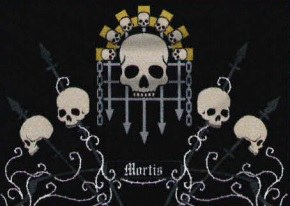

Davin
| Davin | |
|---|---|
| Compliance of Davin and the Plague Moon campaign, part of the Great Crusade | |
 Luna Wolves fighting the risen dead on the moon of Davin Artwork © Games Workshop | |
| Date | Compliance: 941.M30 (143rd year of the Great Crusade) Plague Moon: 004.M31[a] Destruction: c. 011.M31 |
| Location | Davin system and Davin's moon |
| Result | Davin brought into compliance. The moon was retaken from the rebel governor, but the Warmaster Horus was poisoned, carried to the Temple of the Serpent Lodge and turned to Chaos |
| Belligerents | |
| Imperium  Legio Mortis | Opposed Davinite warrior lodges (compliance)Rebel garrison of Governor Eugen Temba  Nurgle's plague daemons and the risen dead Nurgle's plague daemons and the risen dead |
| Commanders and leaders | |
| Governor Eugen Temba † | |
| † Killed in action · (WIA) Wounded | |
| Strength | |
| Moon garrison raised as plague-dead, c. 10,000[b]Davinite warrior lodges, thousands strong[b] | |
| Casualties and losses | |
| Imperium: | Opposed:Governor Temba slain by the WarmasterThe moon's garrison dead before the assault |
| Davin was brought into compliance in 941.M30 and destroyed c. 011.M31 | |
Davin is a desert world and its habitable moon, brought into compliance during the Great Crusade by the 63rd Expeditionary Fleet of the Luna Wolves under Horus. It is remembered in Imperial history for one reason. On Davin's moon, called the Plague Moon in the Mournival's later logs, the Warmaster was struck down by a poisoned blade, and in the Temple of the Serpent Lodge on Davin itself he was healed at the price of his loyalty. Imperial scholars treat the events there as the real beginning of the Horus Heresy, though the war itself did not open until Isstvan III in 005.M31.[1][2]
The world was destroyed late in the Heresy, in the years of the Ruinstorm (c. 011.M31), by the three primarchs Roboute Guilliman, Sanguinius and Lion El'Jonson, who found it a daemon realm and ended it with cyclonic torpedoes. The warrior lodges of its people survived it. Davinite priests carried the lodge institution into the Legions, and many of the Chaos sorcerers who followed the Traitor armies were Davinites.[3]
Background
[edit]The world
[edit]Davin was a Feral World. Its surface was desert, rising into high mountain ranges full of tomb-filled valleys, and falling to savannah and river valleys where the few townships stood. The tombs held the dead of a long line of Davinite kings. The deserts hid the ruins of a more advanced culture, which had fallen in the Age of Strife. Great horned herds crossed the plains, hunted by razor-fanged predators, and serpents were common in the sand.[3]
The Davinites themselves had drifted far from the human norm. They were taller and more sinuous than Terran men, with widely spaced features, large dark pupils and thick hair on face and arm. They kept their intelligence, but lost the arts of a civilised life. They went back to nomadic camps, hide clothing, stone knives and old black-powder handguns. The tribes were ruled by warrior lodges, each of which honoured the animal spirit of a particular predator. Imperial scholars noted that the whole culture was in the grip of warp entities long before the Imperium came, though it was hard to say whether the spirits were friendly to the tribes or only patient.[3]
Davin had a moon that was also habitable. In earlier ages the two peoples had reached one another by ship, but the skill to cross the gap was lost, and the moon's nomads grew apart from those of the mother world.[2]
Compliance of Davin
[edit]The 63rd Expeditionary Fleet found Davin in the 143rd year of the Great Crusade. It was the eighth world the fleet had brought into compliance, and for a time carried the designation Sixty-Three Eight.[4] The Davinite warriors resisted, found themselves hopelessly out of date, and surrendered after a short campaign. Under the doctrine of the day they could have been declared abhuman and treated as such. Horus chose otherwise, because he had been impressed by their courage in battle and their willingness to learn.[2]
The task of re-education fell to a Word Bearers detachment under Kor Phaeron, who had been attached to the 63rd Expedition. Horus gave the governorship to an Imperial Army officer who had served with him and whom he counted a friend, Eugen Temba. Settlers were sent to the world.[2]
The warrior lodges
[edit]The Luna Wolves took away something besides a new world. The Davinite lodge, a hall where the warriors of a tribe met without regard for rank, appealed to Horus's officers. They founded lodges within the Legion, open to Astartes of every class and Legion rank. Captains could speak plainly to their legionaries there, and the legionaries to their captains. The lodges were illegal. The Imperial Truth discouraged secret societies, and the Emperor had forbidden them within the Legions. The Luna Wolves kept the lodges anyway, and they were not discovered until the 200th year of the Crusade (c. 998.M30), when Captain Garviel Loken found the lodge at the heart of the Legion.[2][1]
The Word Bearers shared the Davinite practice. While teaching the tribes the Imperial Truth they also began a quieter instruction of their own, in which the Davinite priests were taught the Word Bearers' own forbidden worship of the powers of the Warp. The priests of one lodge in particular, the Serpent Lodge, became the most active of these converts. Ecclesiarchy tradition records that they were members of a cult of Chaos Undivided, and that they served the Word Bearers' hidden masters.[5]
The Plague Moon
[edit]The return
[edit]In 004.M31, by the 63rd Expedition's reckoning the 203rd year of the Crusade,[a] the Luna Wolves were recalled to Davin at the request of the Word Bearers. Erebus, First Chaplain of the XVII Legion and the Word Bearers' representative on Horus's staff, brought word that Eugen Temba had turned traitor. Imperial garrison soldiers on the moon had followed him, and the world was rotting under a plague.[2] Horus took the news personally. Temba had been his own recommendation. A friend's treason touched his honour. He chose to settle the matter himself.
The moon had been temperate when the Imperium first charted it. Some time after compliance its climate changed. The forests were gone, the moorland had become noxious swamp, and the air was poisonous to unaided men. Imperial scholars attribute the change to the power of the Plague God, Nurgle, who is called Nurg-leth in the Davinite tongue. The garrison of the moon had been dead for some time. Its soldiers had been raised again, and they walked the fogs.[3]
The assault
[edit]Horus led a spearhead of 400 Luna Wolves, three Titans of Legio Mortis, among them the Imperator Titan Dies Irae, and some 4,000 troops of the Byzantine Janizars. Heavy armour could not move in the swamp. The infantry fought through fog and the shambling remains of their own army, and the Luna Wolves pushed on to Temba's refuge, the wreck of a great Imperial starship, the Glory of Terra, which had come down on the moon.[2]

Horus went into the hulk with some 200 Astartes. As he advanced the great ship's superstructure fell, and the party was cut in two. The Warmaster went on alone through the ruined decks and reached the bridge in time to see Temba kill one of his captains, Verulam Moy. Temba was no longer a man. Nurgle's gift had twisted him into something wholly mutated, and the Warmaster killed him. In the fight Horus was struck by a weapon that Temba held, a blade of alien make known as the Kinebrach Anathame.[2]
The Anathame
[edit]The Anathame was a xenos sword of a design foreign even to the oldest records of the Imperium. Mechanicus scholars who later examined its description decided that it had been taken from the Interex, the xenos confederation whom the Luna Wolves had briefly met before they came to Davin. Erebus had taken the sword from them. Imperial scholars regard it as sacred to Nurgle and heavy with the plague power the moon had shown.[3][1] Horus's wound could not be treated by the Legion's apothecaries or by ordinary medicae. He lost the use of his legs and was close to death when the Mournival carried him up to his flagship. After Temba's death the moon's corruption seemed to withdraw somewhat, and the murk cleared from the air, though the world never recovered.[2]
Imperial accounts differ on how the sword reached Temba's hands. The Luna Wolves' own remembrancers say only that it was found on the moon. The Ecclesiarchy holds that Erebus placed it there to be used, and the Word Bearers' later conduct supports that reading. Horus could not be saved by ordinary means, and Erebus had a remedy to offer.[2]
The Serpent Lodge
[edit]
When the Imperial medicae failed, the Luna Wolves' own lodge, by now 300 strong, decided to carry the Warmaster to the Temple of the Serpent Lodge on Davin. Erebus told them that it was a house of healing, and none of the Mournival, then Abaddon, Aximand, Torgaddon and Loken, had cause to disbelieve him. The temple was a vast structure called the Delphos, set in a crater in the desert.[2]
What happened within is known only from the testimony of Heretic Astartes and the accounts of the Lodge's own priests, and Imperial scholars treat both with caution. All sources agree on the shape of events. The Serpent Lodge was a gathering of adepts of Chaos, and Erebus had long been its patron. The priests took Horus's spirit into the Warp. There, the four powers of the Ruinous Gods, working through the pride and the old resentments of the Warmaster, showed him things that were true and things that were not. They showed him the Emperor's secrets, the Great Crusade as it might have been, and the future of the Imperium as they said it would be if the Emperor were left in charge of it. By the Lodge's account the Gods did not need to deceive Horus about much. They needed only to feed his jealousy, and to tell him that the Emperor meant to put him aside.[1][5]
Horus was healed. He came out of the temple apparently whole, and the 63rd Expedition rejoiced. Nobody who saw him knew that a pact had been made. The Warmaster returned to the Crusade with the poison gone from his body and the seed of treason in his heart, and from that day his plans moved toward the war that began at Isstvan.[2]
Aftermath
[edit]The lodge priests
[edit]Davinite lodge priests became a permanent feature of the Traitor armies. They were animist and totemic sorcerers who followed one of the lodge cults of the world. They included the initiates of the Serpent Lodge, who served as Horus's emissaries, and many others who served lesser cults. Mechanicus scholars who studied them after the war concluded that they obeyed some higher purpose than their separate lodges, and may have been directed by the Dark Apostles of the Word Bearers. They knew the oldest Warp craft and could draw on the worst of the Empyrean.[3]
Under Horus's orders, the Davinite population was spread across the Imperium in the following years, and their lodge priests went with the Traitor Legions to spread the influence of Chaos. A number of Davinite fleets fled as far as Pythos in the Pandorax system.[3]
The destruction of Davin
[edit]After Calth the Ruinstorm closed on the Eastern Fringe, and Davin became the centre of the storm. It was enclosed in a shell of bones, the remains of trillions of dead creatures from across the galaxy. In the closing years of the Heresy the combined fleets of Guilliman, Sanguinius and the Lion reached it while seeking a way through the storm to Terra. All three primarchs, and their prisoner Konrad Curze, went down to the surface and stood before the Delphos.[3] The world had become a daemon realm, the domain of Madail, a daemon of Chaos Undivided, and the primarchs were met by a great host. After a battle in the air and on the ground the primarchs withdrew their forces and destroyed the planet with a hail of cyclonic torpedoes. The world on which Horus fell was not left to the Imperium to bury.
The dates of this last campaign are given variously in the records of the three Legions. Most accounts put it in 011.M31, though the Ultramarines' own logs are less definite, since the Ruinstorm made the passing of time hard to measure.[2]
Legacy
[edit]The Imperial Cult keeps no feast for Davin, and the Departmento Munitorum struck its colony records from the rolls after the Heresy. For the Chapters descended from the loyalist Legions it is a warning. A secret lodge within a Legion, an officer trusted because he was a friend, and a commander who could be taken from his Legion by a single wound and a single bargain: each played a part. Roboute Guilliman wrote the Codex Astartes partly in answer to a Legion that depended so completely on one man.[6]
Timeline
[edit]| Date | Event |
|---|---|
| 941.M30 | The 63rd Expedition of the Luna Wolves brings Davin into compliance as Sixty-Three Eight; Kor Phaeron's Word Bearers begin its re-education; Eugen Temba made governor. |
| Mid-M30s–late M30 | Warrior lodges spread through the Luna Wolves; the Serpent Lodge is converted by the Word Bearers.[c] |
| 000.M31 | Horus named Warmaster at Ullanor. |
| 003.M31 | Erebus steals the Kinebrach Anathame from the Interex. |
| 004.M31 | Temba's revolt; the assault on the Plague Moon; Horus wounded by the Anathame aboard the Glory of Terra. |
| 004.M31 | Horus healed in the Delphos of the Serpent Lodge and turned to Chaos. |
| 005.M31 | Horus rebels at Isstvan III; Davinite lodge priests accompany the Traitor Legions. |
| 007.M31 | The Ruinstorm rises after the Battle of Calth; Davin becomes its anchor. |
| c. 011.M31 | Second Battle of Davin: Roboute Guilliman, Sanguinius and Lion El'Jonson destroy the daemon world with cyclonic torpedoes. |
See also
[edit]
Notes
[edit]- ^ a b Imperial accounts disagree on the second date. Chronicles of the 63rd Expedition place the return to Davin in the 203rd year of the Great Crusade (c. 001.M31). The Remembrancer Order, working from later logs, gives a date some years after, and the Administratum's reconciled chronology, followed here, fixes it in 004.M31, after the war with the Interex in 003.M31. All agree that the Horus Heresy began after it.
- ^ a b c Estimated; Imperial records give no figure.
- ^ Date estimated from the sequence of events.
References
[edit]- ^ a b c d McNeill, Graham. False Gods (novel). Black Library.
- ^ a b c d e f g h i j k l m Abnett, Dan. Horus Rising (novel). Black Library.
- ^ a b c d e f g h Annandale, David. The Damnation of Pythos (novel). Black Library.
- ^ Annandale, David. Ruinstorm (novel). Black Library.
- ^ a b Bligh, Alan. The Horus Heresy Book Five: Tempest (Forge World Series). Black Library, pp. 138-145, 178-183, 209.
- ^ Mark of Calth (Anthology) edited by Laurie Golding, "The Shards of Erebus" by Guy Haley.